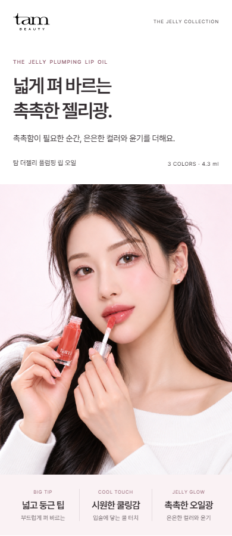

TAM BEAUTY / FINISH RETOUCH
원래 인상은 그대로, 광택만 조금.
볼·콧등·목의 넓은 반짝임을 약하게 줄인 후보입니다. 얼굴 형태와 표정 변경을 요청하지 않았고, 입술의 윤기를 살리는 방향으로 작업했습니다.
같은 자리에서 전후 비교
버튼을 번갈아 누르면 볼·코·목의 반짝임 차이를 확인할 수 있습니다.
모바일 첫 화면
390px 기준. 문안·구성·실제 발색 이미지는 같습니다.원본

광택 보정 후보

미세 보정 비교용 · 기존 확정본 및 카페24 적용 파일 유지 · 보정 이미지 · 작업 기록